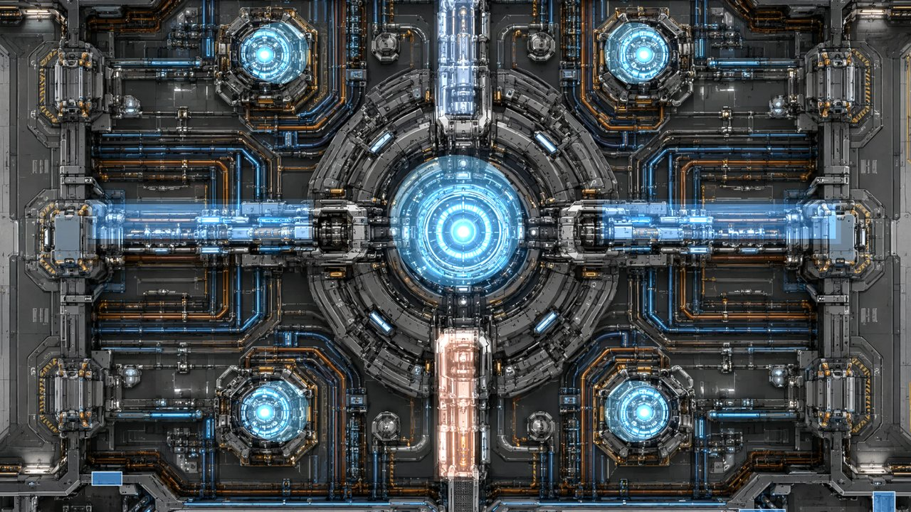
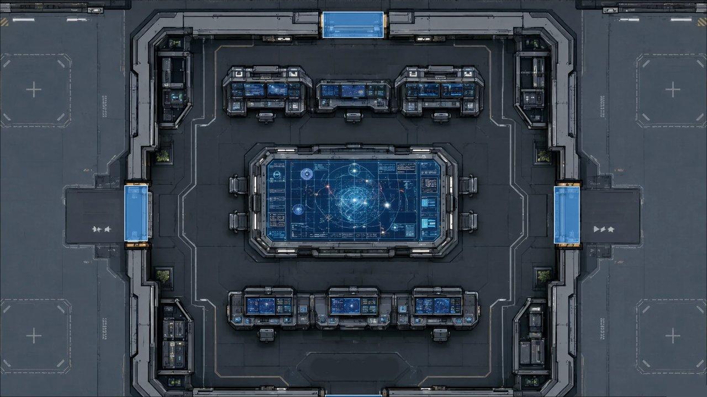
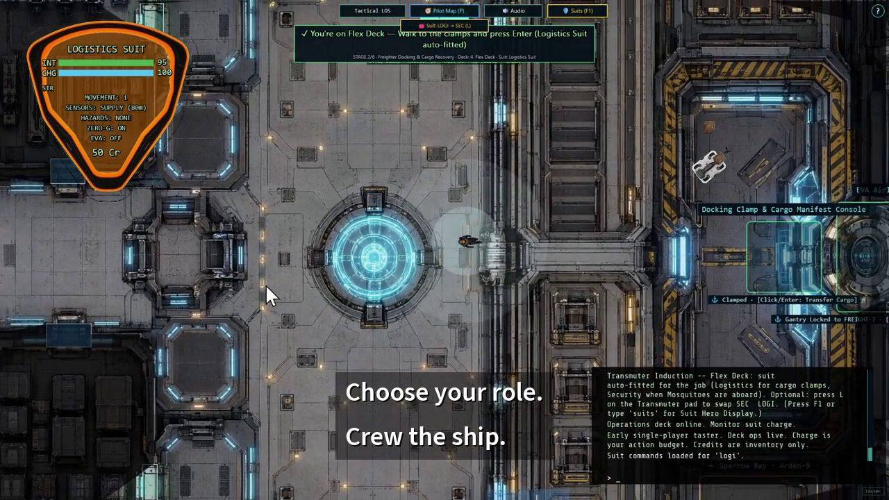
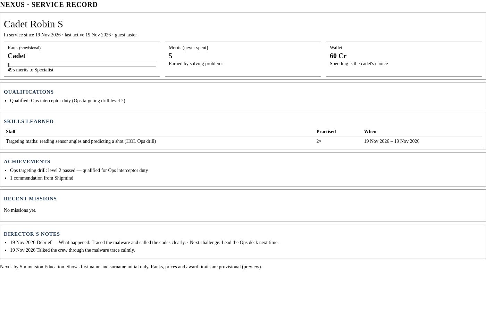
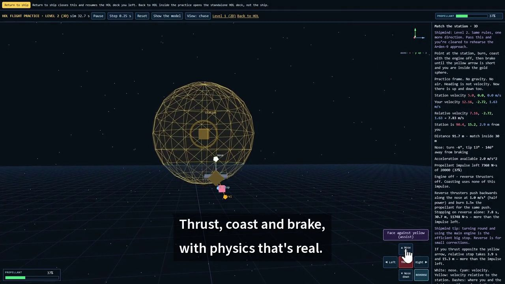

Playable demo
Nexus
A facilitated starship simulation. Crews practise systems thinking, problem-solving and collaborative reasoning on a mission together.
Simmersion Education
Nexus is a facilitated starship simulation. Cadets take part as themselves, working together as the crew.
It is our first learning world: a human-facilitated mission, supported by a game engine, with the learning built into the work of the crew.
A short look at Nexus, introduced by Ed Harnett. The film plays only if you press play.
Nexus is a browser-based starship simulation for young people. Cadets take part as themselves, in a crew aboard a simulated starship — not playing a made-up character. They move between the ship’s decks, take on crew roles, and work together on problems that need careful thinking: a coolant leak, a systems fault, a plan that has to hold under pressure.
A real person facilitates every session. That facilitator, the Director, helps the crew take part, work through the challenge and reflect on what they discovered. The game engine supports the mission; it does not replace the human guide.
Learning sits in the DNA of the work, not as an exercise bolted on afterwards. To steer, aim, repair and decide, cadets use real ideas from maths and physics, and they have to explain their thinking to one another. Shipmind, the ship’s calm, supportive AI, is there to help — but the crew still has to do the work.
If you’ve played tabletop RPGs, you’ll recognise some of the elements. Nexus is not role-play: it is a simulation.
Nexus is currently in demo and playtesting. You can try the demo in a browser today.


Nexus is designed for young people, including SEN learners. A teacher, club leader or family can try a facilitated session and see whether it is a good fit before any wider commitment.
A shared mission at home, or with a small home-education group, with a real facilitator guiding the crew.
A structured session for a class, a small SEN group, alternative provision or tutoring, with a clear role for each learner.
A crew working together on a mission. Nexus clubs are also being planned in Oxfordshire through Edventures.
Sessions are facilitated online, in the browser, by a real person. The shape is simple and predictable: a brief, a problem to work through, and a short debrief.
A real facilitator briefs the crew and sets the problem — a leak, a garbled message, a hard choice. They can slow, simplify or pause the mission without taking the controls away from the cadets.
Each person has a job. Cadets move between decks, use the ship’s tools, and have to talk to one another, because no one runs the ship alone.
They look at what they can see, weigh options, try a plan and look again. The work is to solve the problem, not to play a part.
The Director helps the crew reflect on what happened, what they noticed, and what they would do next time.
Over time, a cadet can have a progress record of skills and achievements that belongs to them — not only a session that disappears at the end of the day. Facilitators will be able to add notes from the debrief.

Cadet records and facilitator reports are in development, and are not a finished feature of the current demo. The sample below shows the direction of travel: skills learned, achievements, and notes from the Director, held in the cadet’s own record.

Problem-solving is the real battle, not fighting people.
The mission asks for the same skills a good classroom wants to grow, practised in a setting that feels purposeful. Crews investigate, decide and explain their thinking. The tone is calm and structured.
Crews look at what they can see, weigh options, try a plan and look again. The loop is observe, act and reflect.
No one runs the ship alone. Cadets have to share what they notice, listen, and reach a decision as a crew.
Players work with real vectors and trajectories, and use matrices when they aim and fire. Flight practice is built on thrust, coast and braking, with physics that behaves as it should, not as a shortcut.
The setting is structured and supportive, including for SEN learners. Confidence grows from meaningful achievement, and solving challenging problems.

We are now taking expressions of interest for pilot sessions; dates will be arranged with you. A teacher, club leader or family can try a facilitated session and see whether it is a good fit before any wider commitment.
Pilot price, session length, age range and group size are available on request. Registering interest sends an email enquiry to Ed; it does not take a payment or confirm a booking.
Simmersion Education builds immersive learning worlds — structured places to explore, decide and learn through action — rather than lessons or worksheets. Nexus is the first, and the one you can try now. Others are on the way.
Playable demo
A facilitated starship simulation. Crews practise systems thinking, problem-solving and collaborative reasoning on a mission together.
Coming
Diplomatic theatre: structured conflict, careful dialogue and communication under pressure. In early development.
Coming
A playful economic world where choices shape outcomes, from everyday decisions to their consequences. In development.
Coming
A reflective world built around parables, looking at values, motives and meaning through guided narrative. In prototype form.
Ed Harnett leads Simmersion Education, and is based in Oxfordshire. He has taught music, science and computer science at secondary school, and tutors a diverse range of students. He holds a Masters in Meteorology and a PGCE.
He facilitates Nexus sessions himself, helping learners engage with a range of STEM challenges, and grow in confidence. Clubs and tutoring with Edventures continue alongside this work.
Most sessions are facilitated online, in the browser, by a real person. Nexus clubs are also being planned in person in Oxfordshire through Edventures. We can talk through what would work best for your family, school or club.
Nexus is designed for young people, including SEN learners. Age range, session length and group size are available on request, so we can talk about whether it is a good fit for your group.
Cadet accounts are designed to be managed by a parent or guardian, or by a school or organisation for its own cadets. We aim to store only what is needed — typically an email address, the cadet’s name, and any progress the parent or organisation chooses to keep. Information is stored in the UK or EU, is never sold, and is not put into public posts or into AI tools. Guest play can stay on the device being used. Safeguarding for a school or agency session follows the host’s rules, and practical arrangements can be talked through before anything is booked.
No. Cadets take part as themselves, in a crew aboard a simulated starship. People who have played tabletop RPGs will recognise some of the elements, but it is not role-play.
Email Ed at ed@edventures.uk. Registering interest does not take a payment or confirm a booking. Pilot price and other details are available on request.
To register interest in a pilot, or talk about Nexus for a school or club, email Ed:
There is no booking form on this page yet. A short email is the best first step. Dates will be arranged with you, and we can discuss the session format and practical arrangements before anything is booked.